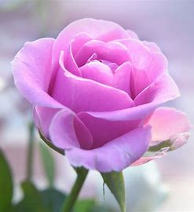

Roses
.jpg)

.jpg)
Flowers, the beautiful creations of nature, are a delight to the senses with their vibrant colors and
intoxicating fragrances. They are the embodiment of purity, love, and beauty. Flowers play a
significant role in human life, serving as symbols of affection, respect, and remembrance.
Each flower has its own unique characteristics and symbolism. For instance, roses are often associated with love
and passion, while lilies symbolize purity and innocence. Sunflowers represent adoration and loyalty, whereas
daisies are symbols of innocence and gentleness.
Flowers also play a crucial role in various cultural and religious ceremonies around the world. They are used in
weddings to signify love and commitment, in funerals as a symbol of respect and remembrance, and in festivals to
celebrate joy and prosperity.
Moreover, flowers contribute significantly to the ecosystem. They attract pollinators like bees, butterflies, and
birds, which help in the process of pollination, leading to the production of fruits and seeds.
In conclusion, flowers are Gmail just visually appealing but also serve multiple purposes in our lives and the
environment. They truly are nature’s gift to us.

{kind=link}